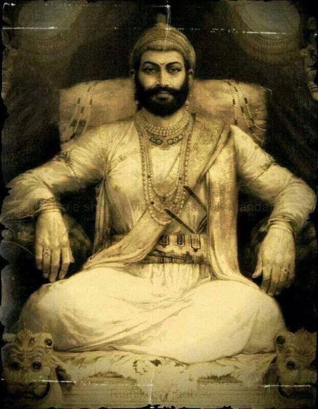

Chatrapati Shivaji Maharaj

The real image of Chatrapati Shivaji Maharaj
Shivaji maharaj was the 1st chatrapati of Maratha Empire.
Full Name:Shivaji Shahaji Bhosle
Born:19 February,1630
Place:Shivneri fort
Father:Shahaji Bhosle
Mother:Jijabai
In 1645:Won the Torna Fort
In 1659:Killed Afzal Khan
In 1673: Retook Panhala from mughals
13 July 1660: Ghod Khind renamed as Paavan Khind
1665: Treaty of Purandar
In 1666: Escaped from Agra
6 June 1674: Crowned as King of Maratha Swaraj at Raigad Fort.
Died: 3 April,1680
Died at: Raigad Read more...